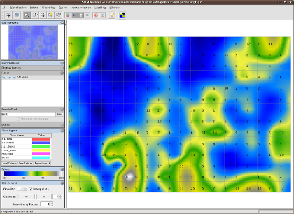
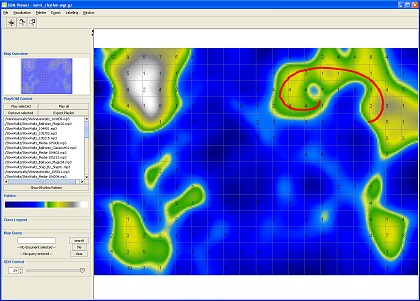
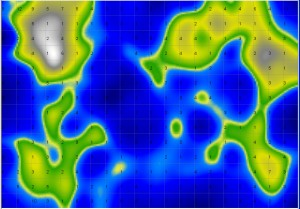
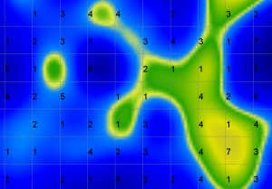
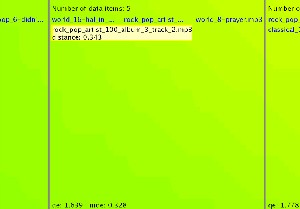
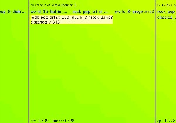

Analysing SOMs with the SOM Viewer
The SOM Viewer is the main application provided by the Java SOMToolbox to interact with and analyse maps.
The SOMViewer main screen
After starting the application, the following main screen of the SOM Viewer is presented. The user interface's largest part is covered by the interactive map on the right, where squares represent single units (nodes) of the Map.
The menu bar provides switching to different visualisations, exporting the map as static images or HTML files, as well as export to the PocketSOMPlayer format. Visualisations can be switched at any time.
Drawing paths - selecting data
By clicking and dragging the mouse a path drawn on the map. Paths can be drawn anywhere and are allowed to cross themselves. The selected data items can be used in different manners. For text documents, a summarisation module will provide abstractive summaries of the selected documents, while with music, a playlist is created, with titles ordered alongside the path.
Zooming and Panning
The Map area of the PlaySOM application can be smoothly zoomed in and out. Additional information is displayed at certain zoom levels.
Zooming can be controlled with the scroll-wheel of the mouse, or with the "+" and "-" keys of the keyboard - but only when the Map-Frame is selected in the Viewer
  

The amount and type of data displayed is influenced by the zooming level: the higher the zooming level, the more information is displayed ranging from information about the number of data items mapped to a particular unit to detailed information about the data items.
Panning, i.e. moving the visible area of the map, is supported as well, and can be controlled in two ways. First, by keeping the right mouse button pressed and moving the mouse. Secondly, by using the arrow keys, as well as the additional keys on the number block for diagonal panning.